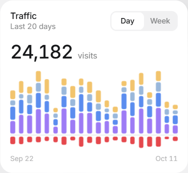
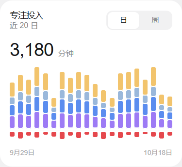
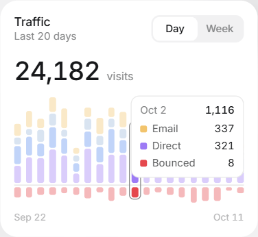
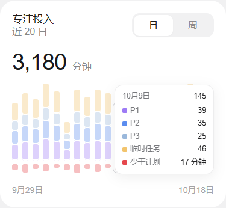

<!doctype html>
<html lang="zh-CN"><meta charset="utf-8"><meta name="viewport" content="width=device-width,initial-scale=1">
<title>MyLifeOS 统计卡片对照</title>
<style>
*{box-sizing:border-box}body{margin:0;padding:28px;background:#f1f1f2;color:#242426;font:14px Arial,"Microsoft YaHei",sans-serif}
main{display:grid;grid-template-columns:375px 375px;gap:24px;width:774px;margin:auto}h1{font-size:20px;margin:0 0 8px}p{color:#77787c;margin:0 0 24px}header{grid-column:1/-1}figure{margin:0}figcaption{margin:0 0 10px;font-size:13px;color:#66676b}img{display:block;width:375px;height:345px;border-radius:25px}
</style><main>
<header><h1>统计卡片 · 同尺寸对照</h1><p>左：Bencho 参考　右：MyLifeOS 实现（演示数据）</p></header>
<figure><figcaption>参考 · 默认状态</figcaption></figure>
<figure><figcaption>实现 · 近 20 日</figcaption></figure>
<figure><figcaption>参考 · 悬停状态</figcaption></figure>
<figure><figcaption>实现 · 悬停状态</figcaption></figure>
</main></html>
